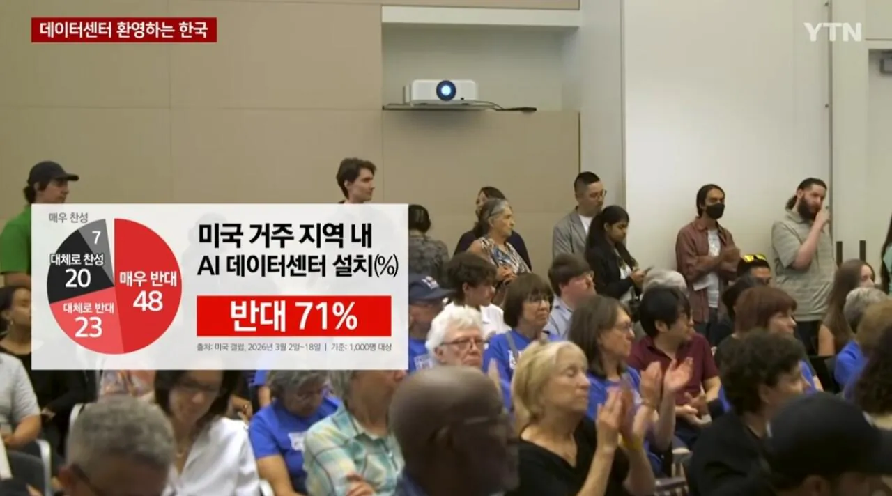
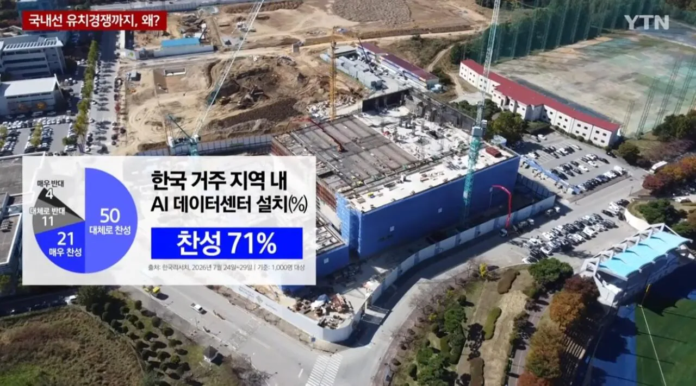

정작 집 옆에 저거 들어서면 장난아닐텐데..


정작 집 옆에 저거 들어서면 장난아닐텐데..
각 세종 처럼 민가에서 떨어져있으면 전혀 문제없음
일단 소음 문제를 차치하고서라도
데이터센터는 일자리 창출도 안되고 상권도 안생기고
거대한 시설에 주민 출입도 안되고
그냥 죽은땅이 되는건데 누가 찬성하겠어
나도 그런줄 알고 있었는데
실제 통계 보니까 우리 동네에 들어와도 찬성한다는 의견이 71% 나옴
넷상에선 미국 소음 영상 보고 선동당한 시끄러운 소수들이 많은듯함
한국도 원래 시끄러운데 개지랄 떨어서 소음줄어든 것뿐임.
뭘 원래 시끄러.
IDC 강남 한복판에 있어도 있는줄 모르고 사는데.
“한솔필리아” 여기 선릉역 인근이고 예전에 KT IDC 였는데 민원있었나 찾아봐라.
나 전산실근무 3년이상했었어. 그런데 일반적인 데이타센타가 아니네? 어떻게 짓는가에 따라서 시쓰럽다.
IT인프라 경력 20년 이상에 FE시절에 IDC설계 ISP자료도 들여다 봤는데 어느 지역 IDC가 시끄럽디?
내가 제일 시끄러웠던데는 손바닥만한 사단급 전산실 정전나서 디젤발전기 돌아가던거말고는 겪어보질 못했음.
하다못해 인도 하이데라바드 출장때도 우리나라에서는 보지도 못한 IDC 규모를 봤는데 현지애가 저거 OO은행 전산실이라고 얘기해 주기전까지 IDC인줄도 몰랐는데
그래.. 미안하다.. 미국애들이 거짓말했나보다...
ㄴㄴ 미국데이터 센터 소음이 저주파음 이던데 이거 발전기 소음임. 가스터빈 발전기. 아마 전력 부족해서 발전기 돌려서 쓰는거 같음. 반면 우리나라는 전력망 끌어서 쓰니까 소음이 안나는거임. 미국과 우리나라는 상황이 전혀 달라.
허가 늦게 나오니 일단 짓고 발전기로 전력 충족 한다고 말한게 재작년 테슬라측에서 말한거임. 근데 빅테크 다들 하는 중이지
아니 미국이랑 사이즈가 달라서 그래. 거기는 기가 단위, 우리는 메가 단위. 그래서 미국처럼 막 미친듯이 소음이 나가고 그러지는 않는다더라
헛소리 마세요.. ㅋㅋㅋ
한국은 데이터센터들 다 조용함
미국애들이 좆까고 대충 짓는거임
애초에 시끄러웠으면 강남이랑 목동에 idc들 남아나질 못했지 ㅋㅋㅋ
한국 idc들은 다 조용함 외부에 소음 안들림
가끔 냉각탑 수증기 보고 화재신고 넣는 사람들 있어서
수증기 안내문 붙어있는게 다다
한국 데센은 gpu가 아니라 서버용이라 소음이 다를텐데...?
수냉식이면 비슷할듯
한국 데센 안에도 gpu잔뜩박힌 애들 많음
요즘처럼 유행하기 전부터 학습용 돌아가던거 많은데
저 미국 영상에 나오는 저런 소음 안남
순전히 미국영상 소음은 소음 좆까고 지은 발전기나 냉각장치 소음임
한국은 완전 밀폐식이라 외부에 소음 안나감 + 발전소 자체운영 안하고 비상 발전기 정도만 있음
gpu 는 핵융합발전기가아님 외부로 나갈 소음 발생할 거 별로없어
기기 별, 랙 별, 공간 별 쿨링 구조는 같음
소음관련은 발전기가 젤 문제
내집 옆에 들어올거라는 개념 자체가 없는거임
그냥 들어오면 돈되니까 좋겠지라는 단순한 사고
강남에 지어
강남에 있어
강남에 많아 ㅋㅋ
미국은 주민 생활 위한 규제를 싹 무시/우회해서 지은거고, 한국은 그렇게 했다간 좃되는 시스템이라 데센 소음영상같은 일 나기는 어려움.
한국 : 국가 규제
미국 : 지방정부 규제
한국식으로 지으면 문제없는데 미국은 온갖 꼼수를 정치인들이 로비받아 다 허용해줌
한국에서 소음 타령하는 애들 있는데 IDC어딨는지도 모르면서 소음 타령은.. 서울 도심 곳곳에 다 있음. 서버룸만 시끄럽지 내부 사무실도 근무 가능하게 조용함. 외부에선 그냥 일반 냉각탑 돌아가는 소음 정도. 위에 강남 타령하는 애도 있는데 강남에 겁나 많음
미국은 저거 할려면 전기, 물 문제를 지들이 부담하기 싫으니 그냥 동네에 지음. 그걸 동네 사람들과 공동 부담해서 동네 전기, 물 요금이 피크를 침.
심지어 전기 문제 해결 하기 싫으니 발전기 이빠이 돌려서 문제가 생김
지금 당선된 텍사스 주지사가 예전부터 당선되면 데이터 센터 조질거라고 벼르고있었고 결국 당선됨.
이전 직장에서 IDC 3군데에 케이지 10개씩 썼음.
ㄹㅇ
기존 DC는 보통 랙 당 5kw 수준에 아주 높아 봐야 10kw라 같은 건물에 있어도 하중이면 모를까 소음은 별 문제 없긴 하지
요즘 얘기 나오는 미국 DC도 AIDC라며 전력 감당 안 되니까 가스터빈 엔진 돌리고 폐열 배출도 패시브하게 배출 힘들어서 소음이 문제가 된 거니까
아니 다시 보니까 애초에 본문도 AIDC라고 명시 되어 있었네
GB300쯤되면 랙 하나가 TDP 140kW ㅇㅈㄹ나서 ㅋㅋㅋ
데센 허가~칩배치까지 미국 평균 24개월 한국 평균 40개월인데 그 이면에는 이런게있던거지 ㅋㅋ
네이버 데이터센터 지어지기전엔 몰랐는데 지어지고는 거기 주변 주민들 엄청 반대하지않나. 경험해보기전엔 다들 몰라
근데 반대 안할수는 있는데 저걸 찬성할 이유가 있나..? 장점이 조금이라도 있나?
한국은 우리동네 OK 우리집옆 NO임 ㅋㅋㅋㅋㅋ 당장 데이터 센터 짓는다는곳 옆에 가면 현수막 걸로 지랄 나있음 ㅋㅋㅋ
근데 좀만 떨어지면 집값올라간다고 환영함 ㅋㅋㅋ
근데 소음 기준 넘으면 우짤라고 .. 비싼거 지어놨는데
데이터 센터 들어오는 과정 보니까 이해가 가게됨 미국 정부 ㄹㅇ 미친새끼들이긴함
미국처럼 시끄럽게 가동하기 힘들걸? 한국 데이터센터 소음문제는 들어본적이 없어
데이터센터가 일자리창출할꺼고 그래서 사람들 몰리고 집값오를꺼라고 상상하는거아님?? 데이터센터는 그냥 공장만 올라가는건대
한국 IDC는 졸라 조용합니다 일반인들은 그냥 건물이구나 지나치는경우가 많음
다만 일자리나 지역경제에 좆도 도움이 안됨... 상주인원도 건물에 비해서 엄청 적고
요즘은 거의 무인에 가까운 IDC도 있음
하남 코스트코 바로 옆에 idc있는데 밖에서 들리는 소음은 하나도 없음
우리나라는 한전이 있어서 발전기를 돌릴 필요가 없지. 도시계획 규제도 빡세서 아무대나 못들어옴.
재밌게도 데이터센터가 무슨 반도체공장인줄 아는사람들이 많음..
idc에 들어오는 민원이라곤 마주보고 있는 아파트 건물에서 들어오는 프라이버시 민원 뿐임
아직 나이든 사람들은 저게 뭔지 몰라서 그냥 기업 생기는거다 싶어가 찬성하는거다 ㅋㅋ
데이터센터 정체를 알고나면 병신새끼 아닌 다음엔 찬성 던질수가 없음.
idc는 시스템 난방수 공급원으로서 기능할 수 있나?
들어와도 지역경제에 미치는 영향이 별로 없음. 자원만 존나 퍼먹고
저거들어오면 집값오를줄알고저러는거임ㅋㅋㅋㅋ 한국인평균수준 진짜 개심각함
미국데센 소음 동영상이 너무 컸다..
들어오면 민원이지ㅋㅋ
집앞에 지어봐라 ㅋㅋ 민원 쩔거 같은디
다들 내집에만 짓지마라 아닌가
데이터센터 유치한다니까 주변 어르신을 다 좋아하는거보고 어이가 없었음
리턴 하나도 없는 건물인데 ㅋㅋㅋ
국내에서 데이터센터 시끄러운건 본적이없어서 미국 집앞 데센 좆나시끄러운 영상보고 좀 충격먹음
서버가 한두대가
아니라서 서버실은 소음이 심각한 수준이다 하지만 센터
밖으로 나가면 지속적인 미세한 소음이 나는데 이게 주변에
영향을 끼칠정도는 아니다 오히려 주변 도로에 차량소리가
더 심하면 심했지
장점이 하나도없는 ㅋㅋㅋㅋㅋ
잘생각해보니 우리나라에서 광양 , 포항제철소 , 여수케미칼 보면 아무런 문제없이 돌아간다.
그냥 그런산단 지역특구만들어서 다 같은곳에 쑤셔박아넣음
경기도에도 산단넘쳐있고
강원도 산골에 지어라
걍 존너 시끄러워서 문제되는고라 관광지가 될리가있나